23ª Reunión Anual · Cardiopatía Isquémica y Cuidados Agudos Cardiovasculares
El cardiólogo de críticos vs la IA
Parador de Alcalá de Henares · Néstor Guerra (NCompany)
Moderan: Ana Viana Tejedor y Álvaro Aceña Navarro · Demo en directo con GPT‑5.5 Pro
NÉSTOR vs Aitor Uribarri (Vall d'Hebron)
Caso 1. Una presentación inusual a la vez que desafiante de síndrome coronario agudo: ¿tratar o no tratar?
Gonzalo García Martí, Giulia Nardi, Jorge García Onrubia, Juan Miguel Miranda Torrón, Manuel Carnero Alcázar, Pilar Jiménez Quevedo · Hospital Clínico San Carlos
Historia clínica
Antecedentes personales:
Varón de 56 años.
FRCV: HTA, tabaquismo, vida sedentaria (gamer).
Sin otros antecedentes de interés.
Enfermedad actual:
Consulta en el H. U. Príncipe de Asturias el 29/12/2025.
Dolor interescapular y torácico persistente irradiado hacia MSI.
Vómitos y sudoración profusa.
TA 174/92 mmHg, FC 59 lpm.
Manejo urgente: Dolor torácico → Alteraciones ECG y ETT → CÓDIGO INFARTO
PREGUNTA 1¿Qué pauta de antitrombóticos administrarías?
Paciente con dolor torácico, alteraciones en ECG y en ETT. Se activa Código Infarto.
Antecedentes personales:
- Varón de 56 años.
- FRCV: HTA, tabaquismo, vida sedentaria (gamer).
- Sin otros antecedentes de interés.
Enfermedad actual:
- Consulta en el H. U. Príncipe de Asturias el 29/12/2025.
- Dolor interescapular y torácico persistente irradiado hacia MSI.
- Vómitos y sudoración profusa.
- TA 174/92 mmHg, FC 59 lpm.
Pregunta 1: ¿Qué pauta de antitrombóticos administrarías?
A) AAS 300mg + Ticagrelor 180mg o Prasugrel 60mg.
B) AAS 300mg + HNF en perfusión.
C) AAS 300mg + Clopidogrel 600mg.
D) AAS 300mg.
Adjuntar: ECG inicial + ETT
✅ Nos habríamos decantado por antiagregación simple con AAS 300mg. En Urgencias ya se había administrado AAS 300mg + Ticagrelor 180mg antes de avisar a la guardia de Cardiología.
PREGUNTA 2¿Cómo manejamos esta situación?
Continúa el caso anterior. En la sala de hemodinámica:
- Dificultad en el sondaje del TCI por staff de Hemodinámica con experiencia.
- Persiste con dolor torácico a pesar de NTG.
- Hemodinámicamente estable.
Pregunta 2: ¿Cómo manejamos esta situación?
A) No me queda clara la severidad ni etiología de la lesión, realizaría imagen intracoronaria.
B) Parece una disección coronaria espontánea con flujo TIMI 3, me decantaría por manejo conservador.
C) No hay ninguna lesión severa, por lo que daría el procedimiento por finalizado.
D) El paciente tiene dolor torácico con cambios en ECG y ETT, realizaría ACTP con stent farmacoactivo directo al tronco.
Adjuntar: imágenes de coronariografía
✅ Respuesta: A — imagen intracoronaria (IVUS).
PREGUNTA 3¿Y ahora qué hacemos?
Tras realizar IVUS, se realiza ACTP a tronco coronario izquierdo con buen resultado.
Pregunta 3: ¿Y ahora qué hacemos?
A) Me quedo tranquilo con el buen resultado del stent: vigilancia en Unidad de Cuidados Intensivos.
B) El paciente presenta claramente una disección de aorta tipo A, realizaría un TC urgente.
C) Ante la sospecha de disección de aorta y aprovechando que estamos en la sala de Hemodinámica, le realizaría una ventriculografía.
D) No habría hecho ACTP con stent ya que se trata de una disección coronaria espontánea.
✅ Respuesta: B — disección de aorta tipo A, TC urgente.
Mensajes para llevar a casa
La disección aórtica tipo A con afectación de TCI es una patología con alta mortalidad.
La cirugía emergente es el único tratamiento disponible que puede mejorar el pronóstico.
El trabajo en red y la colaboración multidisciplinar son aspectos clave en esta patología.
Debemos ser cautos al administrar el segundo antiagregante si hay dudas diagnósticas.
NÉSTOR vs Jaime Aboal (H. U. Girona)
Caso 2. HeartMate 3 en territorio hostil
Carlos García Jiménez · Fellow SEC · Unidad Cuidados Críticos Cardiológicos La Paz
El paciente — características basales y antecedentes
Perfil clínico el día antes:
Varón 60 años
Tabaquismo activo
Padre y tíos con cardiopatía isquémica
Profesión: Industria petrolera y nuclear
Ninguno previo al evento
27 de septiembre — el evento índice (centro de origen):
Killip IV. SCAI C → D.
Coronariografía: oclusión completa del TCI con territorio anterolateral y septal sin perfusión.
Soporte mecánico inicial: Balón de contrapulsación → escalada a Impella CP.
Octubre — primeras grietas en el centro de origen: Trombosis AFD tras retirada de Impella · Neumonías repetidas por broncoaspiración · Traqueostomía por destete prolongado · FRA en TSR oligoanúrico · UPP III–IV (sacro, talones, occipucio). Rechazado inicialmente para terapias avanzadas en centro de origen.
5 de noviembre — llegada al centro de referencia: 38.3ºC. Fiebre. Hb 8.1, 12.300 leucocitos, Cr 3.28, urea 177, PCR 65, PCT 3.79, lactato 0.7.
PREGUNTA 2¿En qué perfil INTERMACS lo clasificarías?
El paciente persiste con DSVI severa, dependiente de noradrenalina a dosis intermedias y ciclos semanales de levosimendán.
Pregunta 2: ¿En qué perfil INTERMACS lo clasificarías?
A) INTERMACS 1 — shock cardiogénico crítico ("crash and burn")
B) INTERMACS 2 — deterioro progresivo a pesar de inotrópicos
C) INTERMACS 3 — estable pero dependiente de inotrópicos
D) INTERMACS 4 — síntomas en reposo, en domicilio
✅ Respuesta: C — INTERMACS 3 (estable pero dependiente de inotrópicos).
27 de enero — el cateterismo derecho
Cifras del CCD:
AD 2 mmHg
VD 24/0 mmHg
AP 20/4/11 mmHg
PCP 7–8 mmHg
GC 5 L/min
RVP 0.9 UW
Sin datos de hipertensión pulmonar pre/post-capilar. Ausencia de contraindicaciones hemodinámicas para terapias avanzadas.
PREGUNTA 3Mejor predictor de fracaso del VD post-DAVI
Pregunta 3: De los siguientes parámetros, ¿cuál es el MEJOR predictor de fracaso del ventrículo derecho tras el implante de un dispositivo de asistencia ventricular izquierda?
A) Fracción de eyección del ventrículo izquierdo
B) Resistencias vasculares pulmonares aisladas
C) Ratio AD/PCP > 0.6 + TAPSE bajo + disfunción VD ecocardiográfica
D) Presión arterial pulmonar sistólica > 50 mmHg
✅ Respuesta: C — combinación de parámetros. En este paciente: AD 2 mmHg, PCP 7–8, TAPSE 19 mm. Riesgo bajo de fracaso de VD.
PREGUNTAHemorragia digestiva en HM3 — mecanismo
Un paciente con HeartMate 3 presenta hemorragia digestiva por angiodisplasias.
¿Cuál es el principal mecanismo fisiopatológico subyacente?
A) Hemólisis intravascular crónica con anemia secundaria
B) Síndrome de von Willebrand adquirido por destrucción de multímeros de alto peso molecular
C) Toxicidad directa de la anticoagulación oral en mucosa intestinal
D) Estasis venoso esplácnico por flujo no pulsátil
✅ Respuesta: B — síndrome de von Willebrand adquirido (destrucción de multímeros de alto peso molecular por fuerzas de cizallamiento).
PREGUNTAVálvula aórtica que no abre en ningún ciclo
Un paciente portador de HeartMate 3 está en seguimiento ambulatorio. Sus RPM son estables, el flujo estimado es de 3.8 L/min y refiere disnea leve de esfuerzo. El ecocardiograma muestra la válvula aórtica que no abre en ningún ciclo.
¿Cuál es la consecuencia fisiopatológica más relevante de este hallazgo?
A) Aumento del riesgo de trombo intraventricular y embolismo sistémico
B) Mayor consumo miocárdico de oxígeno por sobrecarga de volumen
C) Deterioro de la función diastólica del ventrículo derecho
D) Reducción del flujo pulmonar por aumento de la precarga del VI
✅ Respuesta: A — aumento del riesgo de trombo intraventricular y embolismo sistémico.
NÉSTOR vs Pablo Pastor (H. Arnau de Vilanova, Lleida)
Caso 3. ¿Qué tiene mi paciente? — Electrocardiografía clínica
10 ECGs preparados por Ana Viana Tejedor y Álvaro Aceña Navarro
Caso 1
Sin info clínica
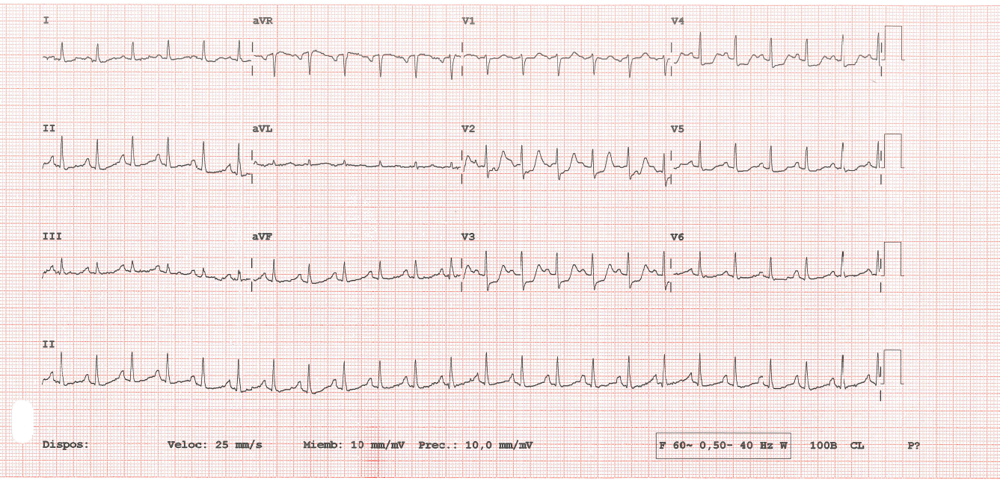
PREGUNTA¿Qué te parece este ECG? — Diagnóstico
¿Qué te parece este ECG? ¿Diagnóstico?
1. Es una taquicardia regular de QRS estrecho. Parece una reentrada intranodal.
2. Es un infarto agudo de miocardio con elevación del ST posterior.
3. Es un SCA sin elevación del ST.
4. Tengo dudas, que me lo diga Néstor Guerra.
Adjuntar: ECG
Caso 2 — Varón de 43 años, sin FRCV conocidos, dolor torácico jugando al pádel
Con info clínica
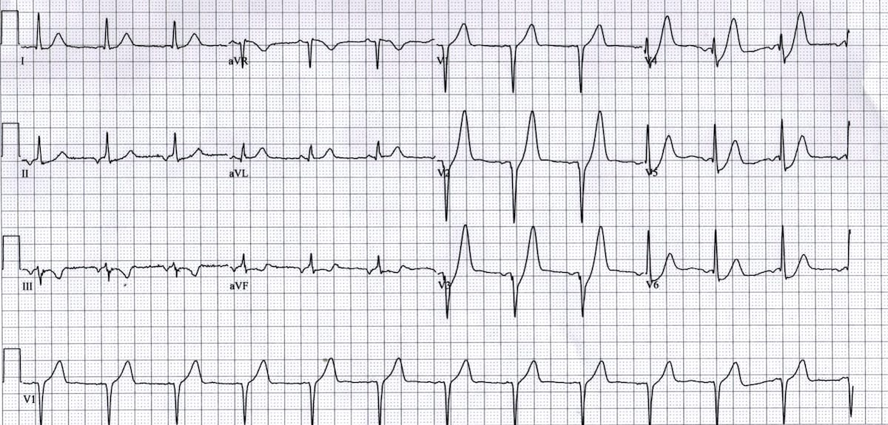
PREGUNTA¿Cuál es el diagnóstico?
Varón de 43 años, sin FRCV conocidos, dolor torácico jugando al pádel.
¿Cuál es el diagnóstico?
1. Es muy joven y tiene una elevación difusa del ST. Es repolarización precoz.
2. Es un infarto agudo de miocardio con elevación del ST anterior.
3. Parece un infarto, pero no veo cambios especulares y el paciente es muy joven, así que voto por una pericarditis.
4. Tengo dudas, mejor le pregunto a Claude o a Néstor Guerra.
Adjuntar: ECG
✅ Patrón de De Winter — IAMCEST. Oclusión aguda de DA proximal. ACTP primaria + stent DES.
Caso 3 — ECG con dolor en la planta de Traumatología tras cirugía de cadera
Con info clínica
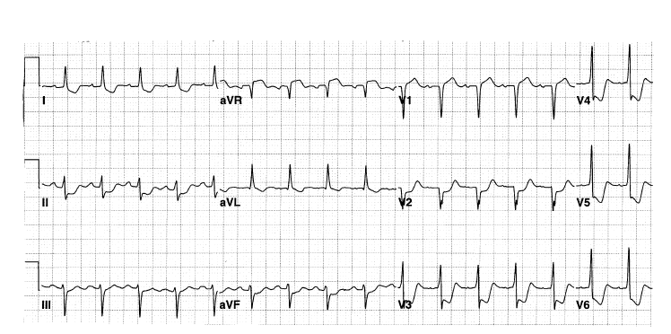
PREGUNTA¿Cuál es el diagnóstico? Diagnóstico y actitud
ECG con dolor en la planta de Traumatología tras cirugía de cadera.
¿Diagnóstico y actitud? Esta vez le pregunto a Grok.
1. Las alteraciones del ECG pueden deberse a alteraciones hidroelectrolíticas por la cirugía. Corrijo el pH y los iones.
2. Es un infarto con elevación del ST (hay elevación en aVR). Hay que hacer un cateterismo emergente.
3. Es un SCA sin elevación del ST de alto riesgo. La isquemia puede ser secundaria a la anemia. Debo corregir la anemia y después hacer un cateterismo diagnóstico.
Adjuntar: ECG
✅ SCASEST de alto riesgo: enfermedad multivaso.
Caso 4
Sin info clínica
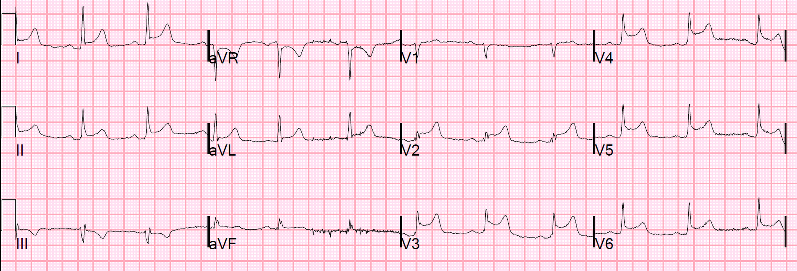
PREGUNTA¿Cuál es el diagnóstico? Diagnóstico y actitud
¿Cuál es el diagnóstico? ¿Diagnóstico y actitud?
1. No necesito contexto clínico. Se trata de un IAMCEST anterolateral muy extenso! Seguro que el paciente está chocado.
2. Sin información clínica apostaría por un cuadro metabólico con alteraciones hidroelectrolíticas que produce alteraciones difusas en el ECG.
3. Se trata de repolarización precoz.
4. Apuesto por pericarditis aguda.
Adjuntar: ECG
Caso 5
Fase 1: sin infoFase 2: con info
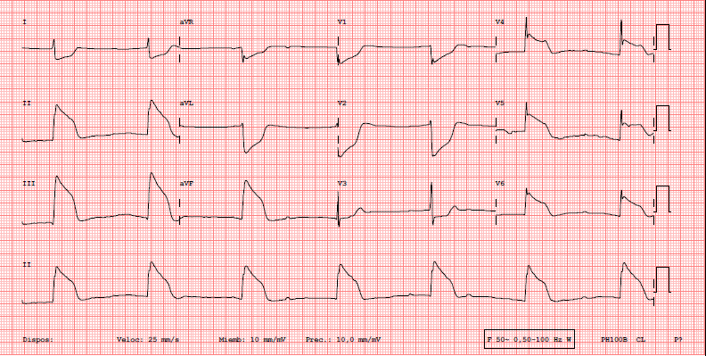
PREGUNTA · FASE 1¿Cuál es el diagnóstico?
¿Cuál es el diagnóstico? ¿Diagnóstico y actitud?
1. No necesito contexto clínico. Se trata de un IAMCEST ínfero-lateral muy extenso! Seguro que el paciente está chocado.
2. Sin información clínica apostaría por un cuadro metabólico con alteraciones hidroelectrolíticas que produce alteraciones difusas en el ECG.
3. Es un ST en lápida, se trata de un vasoespasmo coronario. Le pongo nitroglicerina iv para ver si se corrige el ECG.
4. Puede tratarse de una dextrocardia.
Adjuntar: ECG con dolor
PREGUNTA · FASE 2¿Cuál es el diagnóstico con este contexto clínico?
Varón de 55 años, muy fumador, con episodios nocturnos de dolor torácico opresivo.
¿Cuál es el diagnóstico con este contexto clínico? ¿Diagnóstico y actitud?
1. No necesito contexto clínico. Se trata de un IAMCEST ínfero-lateral muy extenso! Seguro que el paciente está chocado.
2. Sin información clínica apostaría por un cuadro metabólico con alteraciones hidroelectrolíticas que produce alteraciones difusas en el ECG.
3. Es un ST en lápida, se trata de un vasoespasmo coronario. Le pongo nitroglicerina iv para ver si se corrige el ECG.
4. Puede tratarse de una dextrocardia.
Adjuntar: ECG con dolor
Con dolor
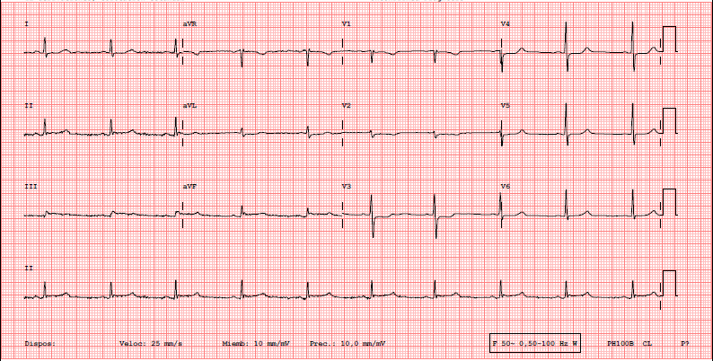
Sin dolor, tras NTG iv
✅ Vasoespasmo. Sin dolor tras NTG iv.
Caso 6 — 90 años ingresado en UCAC por SCASEST
Con info clínica
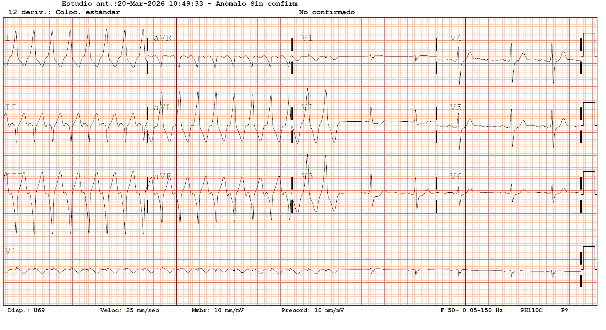
PREGUNTA¿Cuál es el diagnóstico? Diagnóstico y actitud
90 años ingresado en UCAC por SCASEST.
¿Cuál es el diagnóstico? ¿Diagnóstico y actitud?
1. TV cumple criterios de Brugada.
2. TSV por vía accesoria: se ve onda delta en primer latido en sinusal.
3. Flutter ístmico con aberrancia.
4. Amiodarona y ya veremos.
Adjuntar: ECG
✅ Vía accesoria PL izquierda.
Caso 7
Sin info clínica
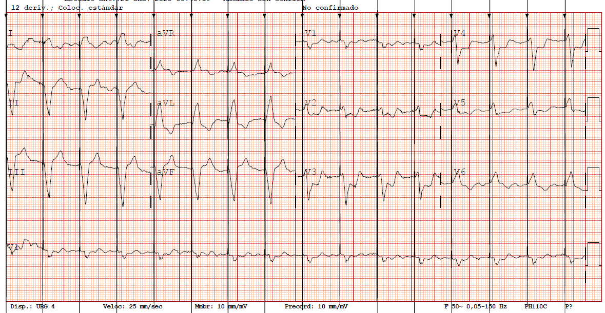
PREGUNTA¿Cuál es el diagnóstico y la actitud?
¿Cuál es el diagnóstico y la actitud?
1. MCP: no se debe intentar más análisis.
2. Ritmo sinusal con estimulación desde apex de VD. Seguro que es igual a previos.
3. Posible elevación de ST posterior. Habría que comparar con previos.
4. @Grok quita la estimulación de marcapasos.
Adjuntar: ECG
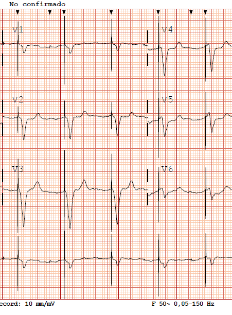
Caso 8
Sin info clínica
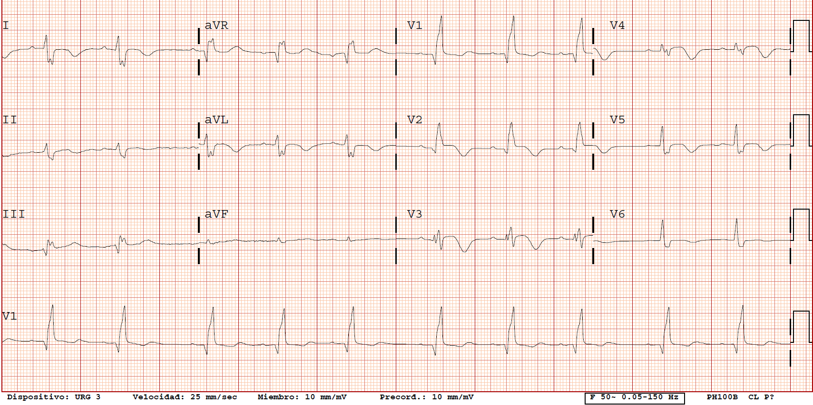
PREGUNTA¿Cuál es el diagnóstico y la actitud?
¿Cuál es el diagnóstico y la actitud?
1. Miocardiopatía arritmogénica o DAVD.
2. Embolia de pulmón subaguda.
3. Miocardiopatía hipertrófica apical.
4. Q patológica V1-V2 y Ondas T negativas de v2 a v6 → IAM anterior evolucionado.
Adjuntar: ECG
Caso 9
Sin info clínica
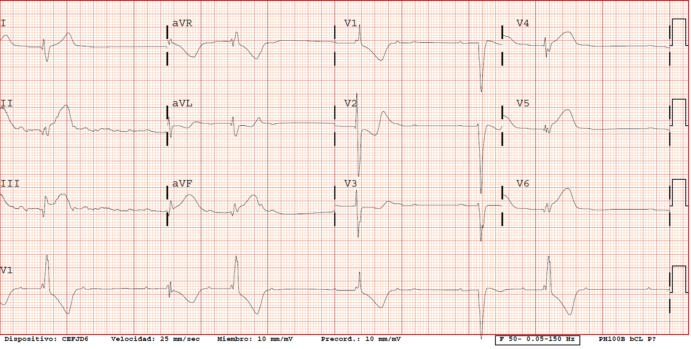
PREGUNTA¿Cuál es el diagnóstico y la actitud?
¿Cuál es el diagnóstico y la actitud?
1. RS y EVs aisladas.
2. RS con BRD por aberrancia alternando con latidos sin aberrancia.
3. BAV completo con escape ventricular de QRS ancho con elevación segmento ST en cara inferior.
4. TakoTsubo evolucionado.
Adjuntar: ECG
Caso 10
Sin info clínica
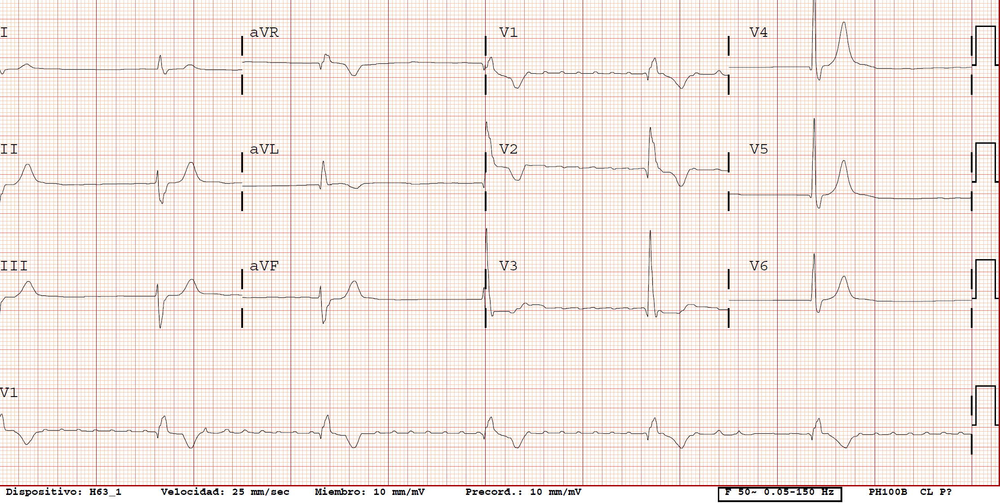
PREGUNTA¿Cuál es el diagnóstico y la actitud?
¿Cuál es el diagnóstico y la actitud?
1. RS y BRD.
2. RS con ondas T sugestivas de infarto hiperagudo lateral.
3. FA bloqueada.
4. ChatGPT, necesito ayuda con este electrocardiograma: compórtate como un arritmólogo experto.